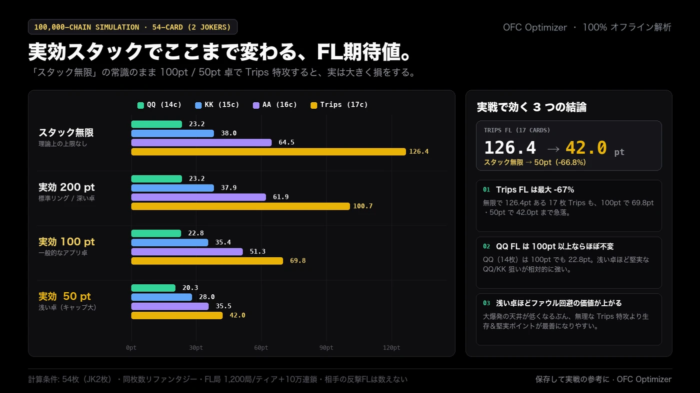
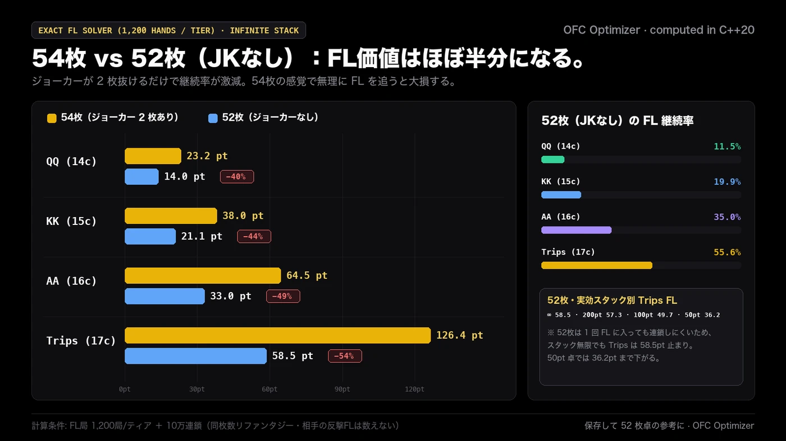

OFC パイナップル ファンタジーランド（FL）期待値表：実効スタック別＆54枚 vs 52枚
広く語られている OFC Pineapple のファンタジーランド期待値は「スタック無限・54枚（ジョーカー2枚）」が前提です。実際の 50pt〜100pt キャップ卓や 52枚（ジョーカーなし）卓にそのまま当てはめると、Trips 特攻のしすぎで大きく期待値を落とします。
1. 54枚（ジョーカー2枚）実効スタック別 FL 期待値表
実効スタックは「1 回の FL 連鎖（リファンタジー含む）で相手から取り切れる最大点数」に上限をかけます。QQ（14枚）は 100pt に届くほど長く連鎖するケースが稀なため価値がほぼ変わりませんが、長い連鎖が収益源の Trips（17枚）は浅い卓ほど急激に価値が削られます。
| FL 突入ティア | スタック無限（∞） | 200pt 卓 | 100pt 卓 | 50pt 卓 | 低下率（∞→50pt） |
|---|---|---|---|---|---|
| QQ（14枚） | 23.2 pt | 23.2 pt | 22.8 pt | 20.3 pt | -12% |
| KK（15枚） | 38.0 pt | 37.9 pt | 35.4 pt | 28.0 pt | -26% |
| AA（16枚） | 64.5 pt | 61.9 pt | 51.3 pt | 35.5 pt | -45% |
| Trips（17枚） | 126.4 pt | 100.7 pt | 69.8 pt | 42.0 pt | -67% |

2. 54枚（JK2枚）vs 52枚（JKなし・スタック無限）比較表
ジョーカー 2 枚が抜けた 52 枚ルールでは、トップ Trips やボトム Quads によるリファンタジー継続率が大きく下がります。継続の複利が弱まるため、すべてのティアで FL 価値が約半分まで圧縮されます。
| FL 突入ティア | 54枚（JK2枚） | 52枚（JKなし） | 変化率 | 52枚継続率 |
|---|---|---|---|---|
| QQ（14枚） | 23.2 pt | 14.0 pt | -40% | 11.5% |
| KK（15枚） | 38.0 pt | 21.1 pt | -44% | 19.9% |
| AA（16枚） | 64.5 pt | 33.0 pt | -49% | 35.0% |
| Trips（17枚） | 126.4 pt | 58.5 pt | -54% | 55.6% |

3. 実効 50pt 卓で最善手が逆転する実戦スポット（ストリート 2）
同じ盤面・同じドロー（54枚）でも、実効スタック条件が変わるだけで #1 最善手が入れ替わる具体例です。
スタック無限の #1：あえて Q♣ を捨てる（+29.10 pt）
6♦＋2♥ をミドルへ置いてトップ 2 枠を空けたままにすると、AA 32.4%・KK 22.2% を引けるため、Q♣→トップ（+28.40pt）を +0.70pt 上回ります。
実効 50pt 卓の #1：Q♣ → トップで確定（+22.93 pt）
50pt 卓では AA FL が 35.5pt まで縮む一方、QQ は 20.3pt を維持。6♦→ミドル・Q♣→トップ（FL 率 69.7%）が Q♣捨て（+21.72pt）を +1.21pt 逆転して #1 になります。